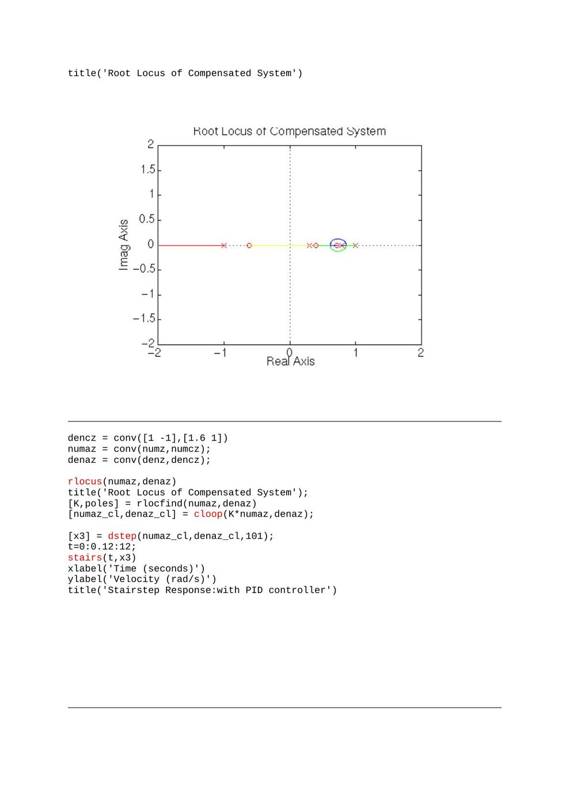
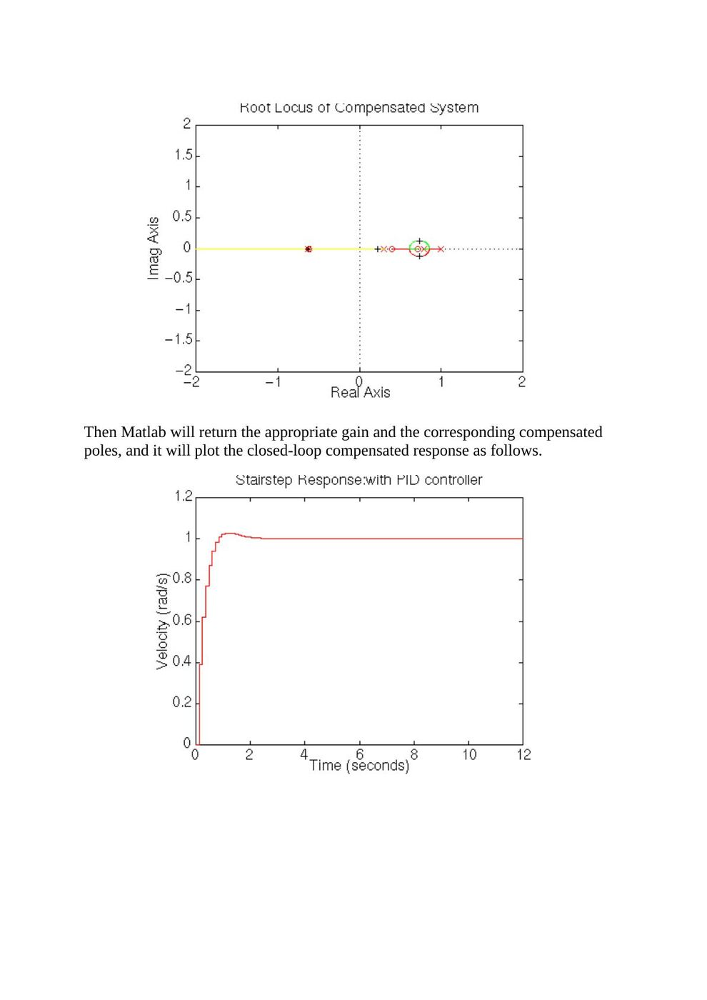

· EEM322
EEM322 Denetim Sistemleri: Ayrık Zamanlı DC Motor ve PID Laboratuvarı
EEM322 – Denetim Sistemleri · 18.03.2014 · 18.10.2026
EEM322 klasöründeki “Denetim Lab - 2” çalışması, bir DC motor modelinin ayrıklaştırılmasını ve PID denetimini inceliyor. Bir arkadaşın derlediği Word belgesinin adı EEM464 kodunu taşıyor; içerikte yazar ve tarih belirtilmemiş. Arşiv tarihi özgün Word belgesinin 18 Mart 2014 oluşturulma bilgisine dayanıyor. Belgenin PDF karşılığı ve iki MATLAB kaynak dosyası yazının sonunda ZIP olarak indirilebilir.
Motor modeli
Parametreler R = 1, L = 0.5, Kt = 0.01, J = 0.01 ve b = 0.1’dir. Kodun kullandığı transfer fonksiyonu:
G(s) = Kt / [JL s² + (JR + Lb)s + Rb + Kt²]
Sayılar yerine konulduğunda:
G(s) = 0.01/(0.005s² + 0.06s + 0.1001)
Örnekleme süresi Ts = 0.12 s. c2dm(...,'zoh') sıfır dereceli tutma ile ayrıklaştırma yapar. İlk kısa dosya yalnız bu modeli ve ayrıklaştırmayı içerir; uzun dosya kapalı döngü ve denetleyici aşamalarını da sürdürür.
Kontrolsüz kapalı döngü ve PID
cloop ile birim geri beslemeli model oluşturulup dstep ile 101 örneklik basamak yanıtı alınır. Zaman vektörü 0’dan 12 saniyeye 0.12 saniyelik adımlarla ilerler; sonuç stairs ile çizilir.
PID katsayıları Kp = 100, Ki = 200, Kd = 10. Tustin dönüşümüyle ayrık denetleyici elde edilir; motor ve denetleyicinin pay/payda polinomları conv ile çarpılır.
Son aşamada denetleyici paydası conv([1 -1],[1.6 1]) ile değiştirilir, kök yer eğrisi yeniden çizilir ve rlocfind ile etkileşimli kazanç seçilir. Bu yüzden son kapalı döngü sonucu seçilen noktaya bağlıdır.
MATLAB kaynak kodu
R=1;
L=0.5;
Kt=0.01;
J=0.01;
b=0.1;
num = Kt;
den = [(J*L) (J*R)+(L*b) (R*b)+(Kt^2)];
Ts = 0.12;
[numz,denz] = c2dm(num,den,Ts,'zoh')
numz = [numz(2) numz(3)];
[numz_cl,denz_cl] = cloop(numz,denz);
[x1] = dstep(numz_cl,denz_cl,101);
t=0:0.12:12;
stairs(t,x1)
xlabel('Time (seconds)')
ylabel('Velocity (rad/s)')
title('Stairstep Response:Original')
% Discrete PID controller with bilinear approximation
Kp = 100;
Ki = 200;
Kd = 10;
[dencz,numcz]=c2dm([1 0],[Kd Kp Ki],Ts,'tustin');
numaz = conv(numz,numcz);
denaz = conv(denz,dencz);
[numaz_cl,denaz_cl] = cloop(numaz,denaz);
[x2] = dstep(numaz_cl,denaz_cl,101);
t=0:0.12:12;
stairs(t,x2)
xlabel('Time (seconds)')
ylabel('Velocity (rad/s)')
title('Stairstep Response:with PID controller')
rlocus(numaz,denaz)
title('Root Locus of Compensated System')
dencz = conv([1 -1],[1.6 1])
numaz = conv(numz,numcz);
denaz = conv(denz,dencz);
rlocus(numaz,denaz)
title('Root Locus of Compensated System');
[K,poles] = rlocfind(numaz,denaz)
[numaz_cl,denaz_cl] = cloop(K*numaz,denaz);
[x3] = dstep(numaz_cl,denaz_cl,101);
t=0:0.12:12;
stairs(t,x3)
xlabel('Time (seconds)')
ylabel('Velocity (rad/s)')
title('Stairstep Response:with PID controller')Not: Bu arşiv kodu çalıştırılmadı; c2dm, cloop, dstep gibi eski MATLAB komutlarını ve etkileşimli rlocfind adımını korur. Word belgesinin ilk PID çiziminde stairs(t,x1), uzun kaynak dosyada ise stairs(t,x2) yazılıdır. İlk ifade önceki yanıtı yeniden çizer; fark kaynaklarda olduğu gibi korunmuştur.
Kök yer ve son basamak yanıtı

